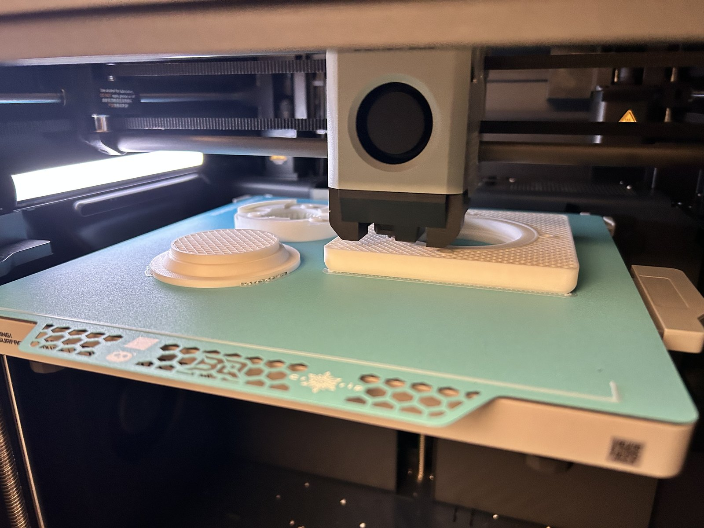
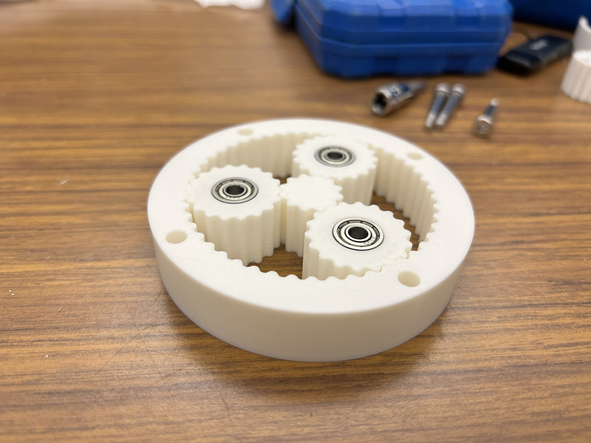
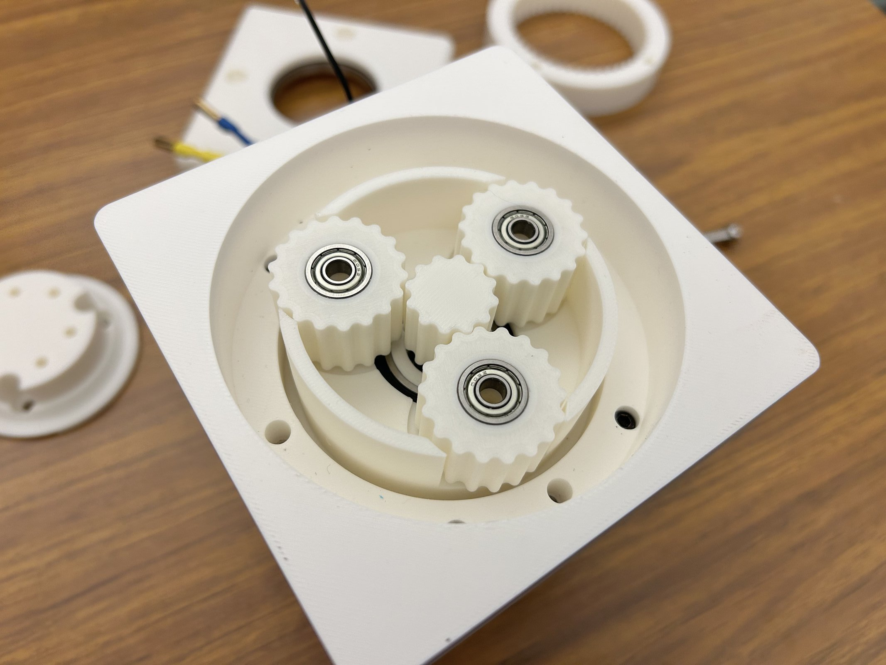
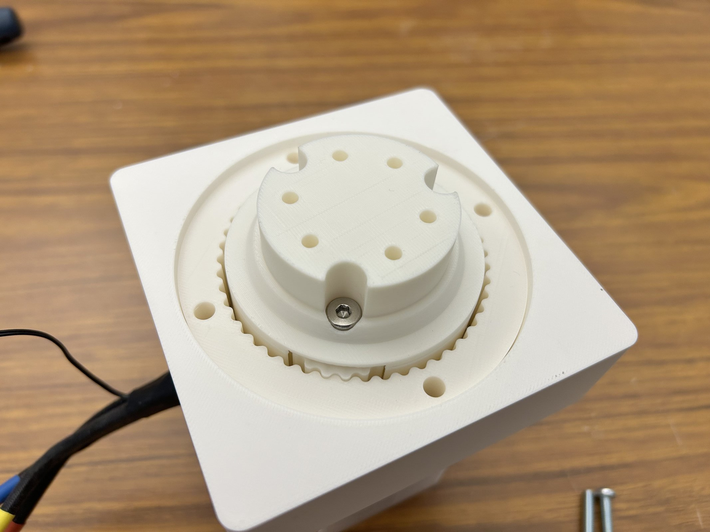
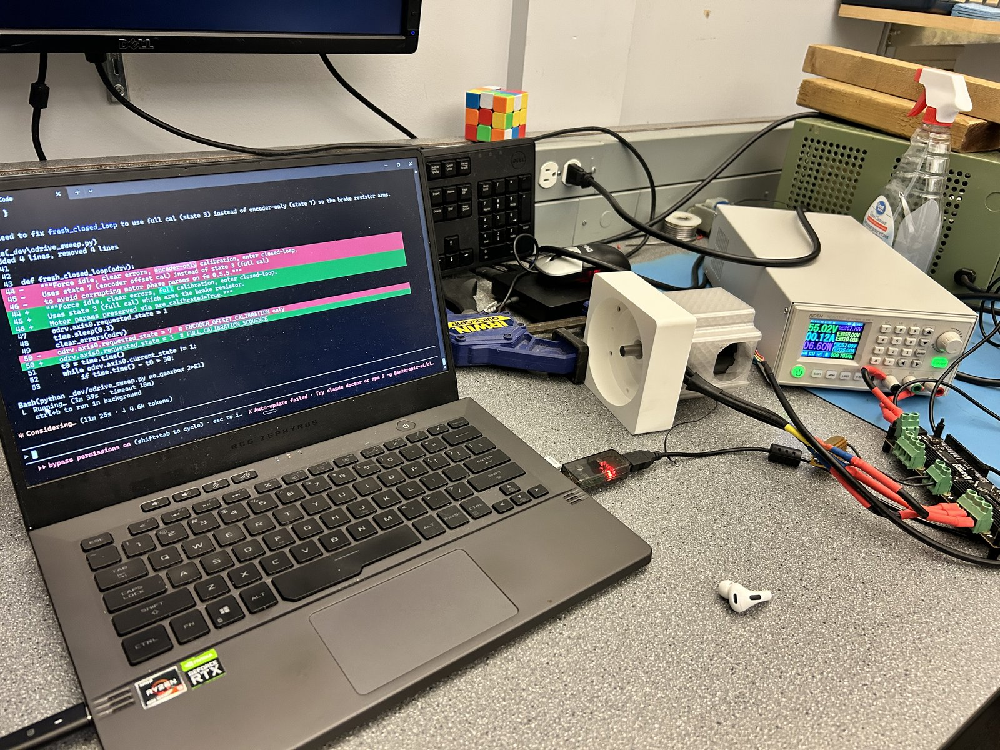

Overview

Three years into a mechanical engineering degree and I still hadn't designed a complete electromechanical system. I started this project at a hackathon in January 2026 because I wanted to build the kind of actuator that shows up in Optimus and modern legged robots: a quasi-direct-drive.
The whole point of a QDD is that you can backdrive the output by hand. Low friction, tight backlash, no cogging. That means the motor can feel external forces through the gearbox, which is what makes impedance control possible. I designed a 5:1 planetary gearbox from scratch, 3D-printed on a Bambu P1S, paired with a BLDC motor and ODrive controller.
Requirements
| Requirement | Target | Type |
|---|---|---|
| Backlash | ≤ 0.5° | Hard |
| Cost | < $120 CAD | Hard |
| Backdrivability (friction torque) | < 1 Nm | Hard |
| Peak torque | ≥ 16 Nm | Hard |
| Continuous torque | ≥ 12 Nm | Hard |
| Efficiency | > 90% | Soft |
| Weight | < 2 kg | Soft |
Project Status
Trade Studies
I scored every major design choice with a weighted matrix before touching CAD. Gear type, ratio, and bearing type were all decided this way.
Gear Type
I compared 6 gear concepts across 7 criteria. Planetary came out on top because it's cheap, printable, and backdrivable, which are the three things that matter most for this project.
| Metric (Weight) | Planetary | Cycloidal | Belt | Capstan | Strain Wave | Sequential |
|---|---|---|---|---|---|---|
| Cheapness (0.20) | 5 | 3 | 3.5 | 4 | 3.5 | 4.5 |
| Transparency (0.15) | 4 | 3.5 | 5 | 4 | 3 | 4 |
| Torque Density (0.10) | 4 | 4 | 3 | 3 | 5 | 2 |
| Precision (0.15) | 4 | 5 | 3.5 | 3 | 5 | 4 |
| DFM/DFA (0.15) | 4 | 3 | 4 | 3 | 3 | 4 |
| Efficiency (0.10) | 4.5 | 4 | 5 | 4.5 | 3.5 | 4 |
| Durability (0.15) | 5 | 4 | 4 | 4 | 3 | 5 |
| Weighted Total | 4.40 | 3.73 | 3.98 | 3.65 | 3.65 | 4.05 |
Ratio
5:1 scored highest at 4.83/5. Lower ratios are more backdrivable but give up torque multiplication; higher ratios add friction and reduce transparency. 5:1 was the sweet spot.
Bearings
Ball bearings won at 4.05/5. I weighted cost at 60% because crossed rollers scored better on performance but cost 5x more, which would have blown the $120 budget.
CATIA V6
I had no CATIA experience before this project. About 60-80 hours of self-directed learning went into the assembly, and most of that was figuring out what not to do.
The assembly is skeleton-driven: a single master part holds all the parameters, reference planes, and axes. Every other part reads from the skeleton instead of referencing other parts directly, so changing one dimension in the skeleton updates everything downstream automatically. This matters for iteration speed, because when a test result says "make the output shaft 2mm bigger," I change one number and the carrier, lid, and bearings all update.


FDM Tolerancing
FDM prints aren't accurate enough for bearing fits out of the box. Bores print undersized by 0.1-0.4mm depending on diameter, so every bearing interface needs a calibrated offset in the CAD model. I keep each offset as a named parameter in the CATIA skeleton, which means the nominal bearing dimensions stay clean and I can tune each fit independently.
All bearing interfaces target a finger-press transition fit: firm pressure seats the bearing, it clicks in, and it doesn't fall out. I went with this instead of the textbook answer (press fit on the rotating ring) because FDM surface texture provides enough grip on its own, and backdrivability is the priority.
| Interface | Offset | Status |
|---|---|---|
| Housing bearing shaft | +0.10 mm | Validated |
| Carrier bearing bore | +0.10 mm | Applied |
| Lid bearing bore | +0.10 mm | Validated |
| Carrier output shaft | +0.10 mm | Applied |
| Planet bearing bore | +0.15 mm | Pending |
| Ring-to-housing bore | +0.30 mm | Applied |
Calibration Coupon
Before printing the full build, I printed a test coupon with representative features (bearing bores, shaft posts, clearance holes) and measured each one with calipers. The results went straight back into the CATIA offsets.
| Feature | Nominal | Measured | Deviation | Result |
|---|---|---|---|---|
| Main bearing bore | 37.10 mm | 37.10 mm | 0.00 | Perfect fit |
| Bearing shaft post | 25.10 mm | 25.01 mm | -0.09 | Good |
| Planet bore | 14.00 mm | 13.75 mm | -0.25 | Offset increased |
| M3 clearance holes | 3.40 mm | ~3.00 mm | -0.40 | Offset extrapolated |
Smaller holes had worse deviation, which makes sense given FDM accuracy scales with feature size. The planet bore and clearance holes needed the largest corrections. I also ended up switching from heat-set inserts to self-tapping screws (M3: 2.6mm pilot, M4: 3.6mm, M5: 4.6mm), which turned out to be simpler and plenty strong enough for a prototype.
Rev 00A
First complete build. Printed on a Bambu P1S in PLA with off-the-shelf ball bearings, assembled by hand, and tested to validate fits and find issues.

Fit Results
| Interface | Result | Action |
|---|---|---|
| Housing main bearing | Slightly too loose | Offset adjusted |
| Lid-to-bearing | Good transition fit | No change |
| Planet bearings | Inconsistent (1 of 3 loose) | Tolerance review |
| M3 motor holes | 0.13mm too tight | Bore enlarged |
| Sun gear bore | Very tight, needed pressing | 10.05 → 10.075mm |
I reprinted the carrier and housing with adjusted offsets and updated 4 skeleton parameters. But beyond the dimensional stuff, five things felt wrong during hand testing: the lid added drag when tightened, the gear mesh felt notchy, the carrier shoulders were deforming, there was play between carrier halves, and bolt torque was too sensitive. Each of those became a formal test.
Testing & Rev 00B
For each of the five issues from Rev 00A, I wrote down the question I was trying to answer and what would count as a pass before touching the prototype. The table below is the result.
| Test | Question | Finding | Decision |
|---|---|---|---|
| T-001 | Why does the gearbox feel notchy? | Herringbone misalignment on at least one planet | Switch to spur gears |
| T-002 | Is the lid over-constraining the carrier? | Yes, double-constrained via ring gear + bearing recess | Decouple lid constraints |
| T-003 | Does the printed shoulder deform? | Top carrier shoulders have print quality issues | New print strategy |
| T-004 | Can carrier halves clock under load? | Play exists but no operational clocking force | No change needed |
| T-005 | Does tightening bolts bind planets? | Narrow window; 1.1 Nm causes drag | Shoulder redesign |
The biggest finding was T-001. The herringbone tooth profile was causing notchy mesh because even a small alignment error between the two halves of each planet creates interference. At this scale and with FDM tolerances, the helix angle wasn't doing anything useful, so I switched to straight spur gears for Rev 00B.
Rev 00B Changes
| Change | Source | Part |
|---|---|---|
| Herringbone → spur gears | T-001 | All gears |
| Larger output shaft + bigger top bearing | T-001 | Carrier top |
| Fix planet bearing shoulder print quality | T-003, T-005 | Carrier top/bottom |
| Decouple lid constraint from carrier | T-002 | Lid |
| Self-tapping threads (no heat inserts) | T-001 | Carrier |
Rev 00B Build
Printed all Rev 00B parts with the updated spur gear profiles and revised carrier geometry. The fits were noticeably better than Rev 00A, and the notchy mesh from the herringbone gears is gone.





What's Next
Rev 00B is built and assembled. Next steps are quantitative testing (backlash measurement, friction torque, efficiency), GD&T with formal tolerance stack-ups, and ODrive motor integration for impedance control. This page will be updated as those happen.